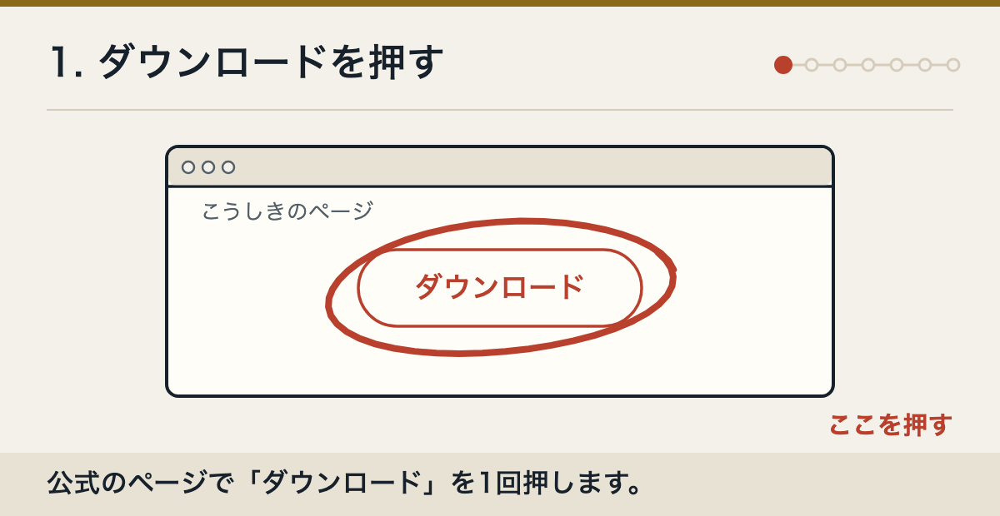
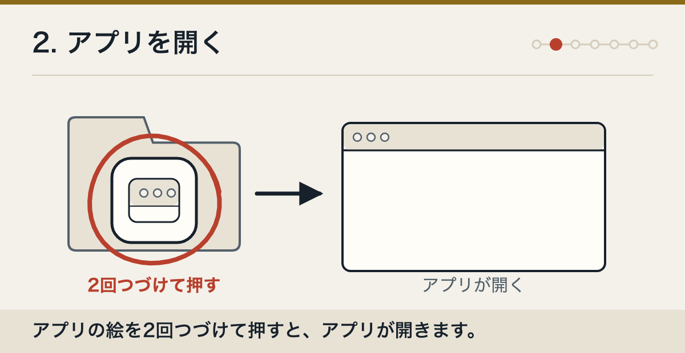
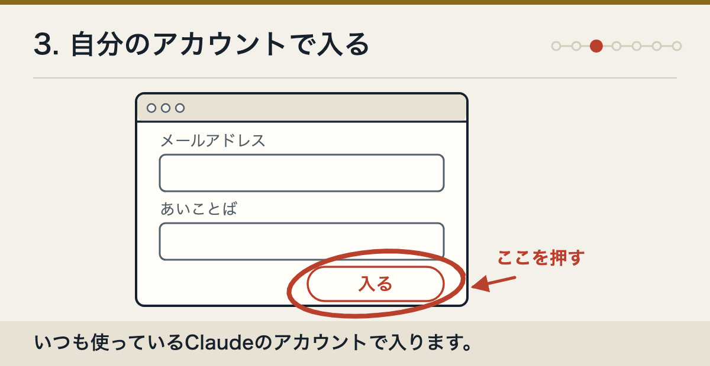
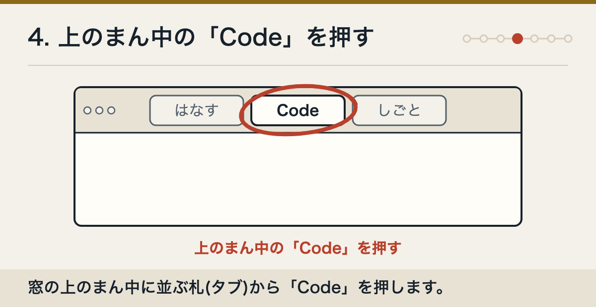
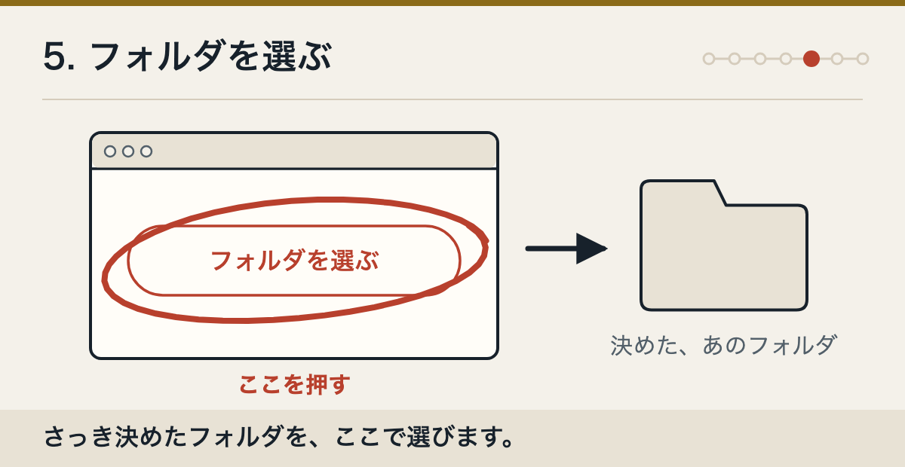
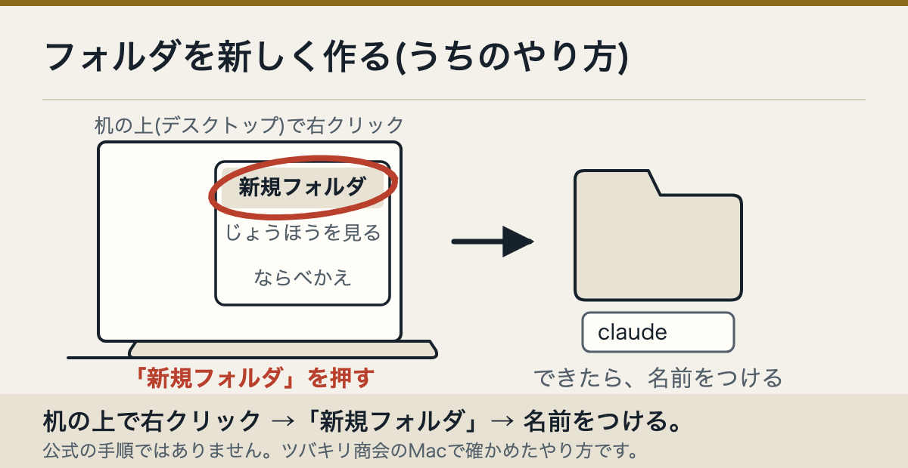
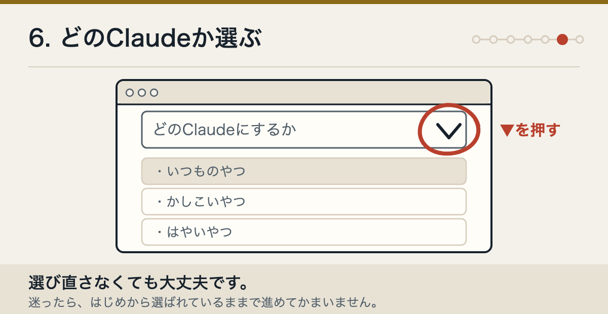
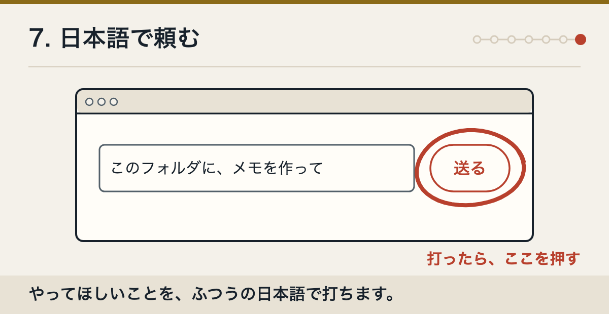

アプリを受け取る
公式のダウンロードページを開き、Mac用のボタンを押します。

Claudeを開く
「アプリケーション」の中にあるClaudeを、2回続けて押します。

サインインする
画面の案内にしたがって、サインインします。

上の真ん中の「Code」を押す
画面の上の真ん中にある「Code」の札を押します。押したときに「アップグレード」の画面が出ることがあります。そのときは有料のプランに入ってから、もう一度押します。
「Code」の札は、Claudeのアプリの中でClaude Codeを使う場所です。

フォルダを選ぶ
まず「Local」を押します。次に「Select folder」を押して、使うフォルダを選びます。
「Local」は、このパソコンの中で作業するという意味です。「Select folder」は、フォルダを選ぶという意味です。

フォルダがまだ無いときは、先に作ります
デスクトップの何もないところで右クリックします。出てきた一覧から「新規フォルダ」を押します。できたフォルダに、好きな名前（例: claude）をつけます。

これはClaudeの公式の手順ではありません。ツバキリ商会のMacで確かめたやり方です。画面の上の「ファイル」→「新規フォルダ」でも作れます。
使うAIを選ぶ
送るボタンのとなりに、モデルを選ぶ欄があります。最初は、出ているものをそのまま使って大丈夫です。あとから同じ欄で変えられます。
モデルは、考え方の違うAIのことです。

日本語で頼む
下の入力欄に、してほしいことを日本語で書いて送ります。Claudeがファイルを変えるときは、変える場所を先に見せてくれます。見比べてから、受け入れるかどうかを決められます。

アプリを入れる
一歩ずつ、7回だけ。
これはMac用です。1歩につき、することは一つだけです。
この記事の出典
- 公式の始め方手順事実code.claude.com/docs/en/desktop-quickstart
- Appleの説明（フォルダの作り方）フォルダ事実support.apple.com/ja-jp/guide/mac-help/mh26885/mac
- 右クリックで新しいフォルダを作るやり方手順うちで確認済み